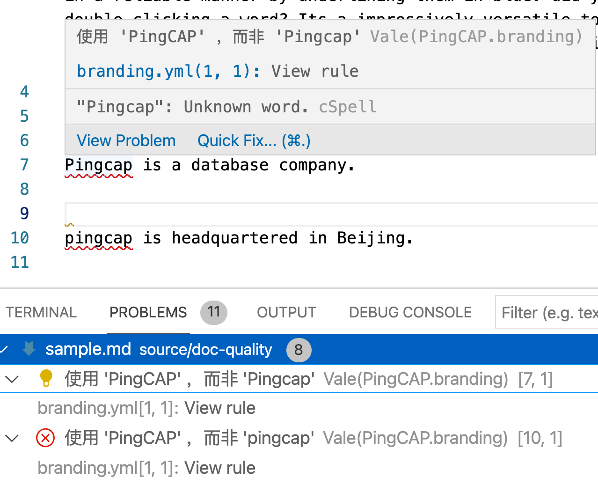

Vale#
Vale是一个功能非常强大的 Prose Linter，除了检查markdown之外，还可以检查DITA等标记文本。
如何使用#
安装 Vale
brew install vale在需要检查的文件的根目录下创建
.vale.ini在
.vale.ini中输入规则所在路径，以及需要启用的规则StylesPath = vale-styles/ MinAlertLevel = error [*] BasedOnStyles = write-good vale.Editorializing = YES vale.Hedging = error
创建规则#
规则解读#
一般技术文档中，不推荐使用被动语态，如果希望linter检查此规则，则可以使用如下规则。
识别出be动词
识别be动词后所跟词汇(tokens)
一旦匹配，即会给用户提示错误，并告诉修改的方式。
extends: existence
message: "'%s' may be passive voice. Use active voice if you can."
ignorecase: true
level: warning
raw:
- \b(am|are|were|being|is|been|was|be)\b\s*
tokens:
- '[\w]+ed'
- awoken
- beat
- become
- been
- begun
- bent
- beset
- bet
- bid
- bidden
- bitten
- bled
- blown
- born
- bought
- bound
- bred
- broadcast
- broken
- brought
- built
- burnt
- burst
- cast
- caught
- chosen
- clung
- come
- cost
- crept
- cut
- dealt
- dived
- done
- drawn
- dreamt
- driven
- drunk
- dug
- eaten
- fallen
- fed
- felt
- fit
- fled
- flown
- flung
- forbidden
- foregone
- forgiven
- forgotten
- forsaken
- fought
- found
- frozen
- given
- gone
- gotten
- ground
- grown
- heard
- held
- hidden
- hit
- hung
- hurt
- kept
- knelt
- knit
- known
- laid
- lain
- leapt
- learnt
- led
- left
- lent
- let
- lighted
- lost
- made
- meant
- met
- misspelt
- mistaken
- mown
- overcome
- overdone
- overtaken
- overthrown
- paid
- pled
- proven
- put
(为节约空间，省去更多词表)
创建规则#
Vale Studio#
Vale 提供了一个可视化的规则编辑器 Vale Studio。
基本语法#
# All rules should define the following header keys:
#
# `extends` indicates the extension point being used (see below for information
# on the possible values).
extends: existence
# `message` is shown to the user when the rule is broken.
#
# Many extension points accept format specifiers (%s), which are replaced by
# extracted values. See the exention-specific sections below for more details.
message: "Consider removing '%s'"
# `level` assigns the rule's severity.
#
# The accepted values are suggestion, warning, and error.
level: warning
# `scope` specifies where this rule should apply -- e.g., headings, sentences, etc.
#
# See the Markup section for more information on scoping.
scope: heading
# `code` determines whether or not the content of code spans -- e.g., `foo` for
# Markdown -- is ignored.
code: false
# `link` gives the source for this rule.
link: 'https://errata.ai/'
# The number of times this rule should raise an alert.
#
# By default, there is no limit.
limit: 1
规则示例#
PingCAP公司是一个知名数据库公司，不少外部人士常常将公司名称写为pingcap或Pingcap等，需要一个规则文本进行检查，确保所有的文本或代码中，均使用了 PingCAP 的正确写法。
在 Styles 中新建PingCAP文件夹，并在其中新建 branding.yml 文件，并在其中输入下方规则
---
extends: substitution
message: "使用 '%s' ，而非 '%s'"
level: error
ignorecase: false
# swap maps tokens in form of bad: good
swap:
pingcap: PingCAP
Pingcap: PingCAP
PingCap: PingCAP
在VS Code中的检测效果

阅读材料#
正则表达式教程 Regular expression 101